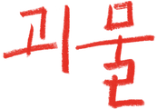

Review Data Analysis · 2026
괴물
Monster · 2023 · Kore-eda Hirokazu
왓챠 리뷰 477건
평균 ★ 4.2
4점 이상 77.7%
Firecrawl 크롤링

→ / SPACE 로 이동
Overview
작품 & 데이터 개요
고레에다 히로카즈 감독 · 사카모토 유지 각본 · 사카모토 류이치 음악 ·
칸 영화제 각본상. 왓챠 관객 리뷰 477건을 수집·분석했다.
Method
어떻게 분석했나
Firecrawl로 렌더링·스크롤 수집 → 파싱 → 통계 → 시각화.
🕸️
수집 (Firecrawl)
watcha 렌더링 · 리뷰 477건
→
→
→
🎞️
시각화
Chart.js · matplotlib
리뷰 길이 분포
전체의 71%가 25자 이하의 단문 감상.
반면 상위 약 9%는 100자 이상의 심층 분석으로, 단문 정서 반응과
장문 해석이 뚜렷이 나뉜다.
Core Question
“괴물은
누구인가?”
가장 많이 등장한 단어는 ‘괴물’(146건, 30.6%)과
‘나’. 관객은 괴물을 찾다가 결국 자신을 마주한다.
“괴물을 찾다가
내가 괴물이었구나 하는 결말.”
토맛토마토
“누가 괴물인지 찾고 있던
나를 보고 충격에 빠졌다.”
진종원
Keyword Frequency
최다 등장 키워드
Most Quoted
가장 많이 인용된 대사 · 감상
“몇몇 사람만 가질 수 있는 건
행복이라 부르지 않아.”
— 요리(작중 대사) · 리뷰에서 가장 많이 인용된 문장
“우린 새로 태어난 걸까? / 그런 일은 없는 것 같아. / 그래? 다행이네.”
미나토·요리 — 결말
“오해의 오해의 오해…
이 영화는 괴물이 없다.”
김규민
“다시 태어나지 않아도 괜찮다고 생각했다. 그렇게
뜻밖의 위로를 받았다.”
from.serein
“아쿠아만 나왔다 하면 파블로프의 개마냥 눈물이.”
다 영
Theme Distribution
리뷰 테마 분포
Theme 01 · Structure
다층적 시점 — “컬러 라쇼몽”
같은 사건을 엄마 → 담임 → 아이들의 눈으로 세 번 반복하며,
앞선 판단을 스스로 반성하게 만든다.
Part 1
엄마 · 사오리
아들의 변화를 보고 담임을 의심하고, 학교를 불신한다.
Part 2
담임 · 호리
무책임해 보였던 행동에 알지 못했던 맥락이 드러난다.
Part 3
아이들 · 미나토·요리
어른들이 결코 닿지 못한 진실 — 눈부신 햇살 속에서.
“시점 바뀔 때마다 머리 한 대씩 맞는 느낌이었다.” — Yem
Theme 02 · Gaze
오해와 편견 — 모두를 괴물로
“누군가를 함부로 이해한다는 게 얼마나 오만하고 잔인한 것인지.”
Theme 03 · Ending
“다시 태어나지 않아도
괜찮아.”
결말은 비극적이면서도 구원적이다. 관객은 “현재의 나를 부정하지 않아도 된다”는
위로에서 개인적 안도를 얻는다 — 관련 리뷰 68건(14%).
Theme 04 · Sound & Image
사운드 & 영상미 — Aqua
사카모토 류이치의 엔딩 곡 《Aqua》는
‘눈물 트리거’로 기능한다. 감독·각본·음악의 조합이 반복적으로 호평받은 지점.
“사카모토 유지의 비틀린 시선과 고레에다의 담담함, 류이치 사카모토의 쓸쓸함이 완성하는 피날레.”
“류이치 사카모토의 세련된 사운드 디자인.”
Emotional Arc
감정 반응 흐름 — 슬픔 → 성찰 → 위로
Minority View
비판적·유보적 시각 (약 22%)
취향 불일치
“작품성과는 별개로 제 취향과는 머네요.”
초반 템포
“중반까지 화병 나서 끌 뻔했다. 끝까지 보니 명작이란 걸 알았다.”
작위성
“담임 파트에서는 《더 헌트》와 같은 작위성이 느껴졌다.”
장르 결합의 낯섦
“부조리극과 리얼리즘이 어색하게 결합되고 있다고 느꼈다.”
Conclusion
괴물은 타인이 아니라
우리가 만들어내는 시선이다.
리뷰의 30% 이상이 ‘괴물’과 ‘나’를 연결한다. 《괴물》은 단순한 관람을 넘어
자기 성찰의 계기로 소비되고 있다.
시점 구조
결말의 위로
Aqua
아역 연기
사회 비판